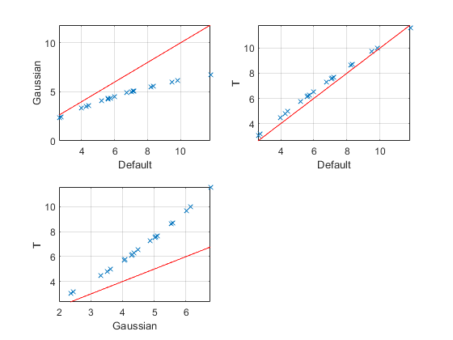

clear all
close all
group(1).name='Frogs';
group(2).name='Bears';
mu=[3,5];
mu=mu+100;
N=[12,13];
approach(1).name='Default';
approach(2).name='Gaussian';
approach(3).name='T';
Reps=20;
for r=1:Reps,
group(1).x = randn(N(1),1)+mu(1);
group(2).x = randn(N(2),1)+mu(2);
[p,stats] = glm_anova1 (group);
t = sqrt(stats.F);
BF = t2smpbf(t,N(1),N(2));
approach(1).logBF(r) = log(BF);
approach(2).logBF(r) = bayes_glm_anova1 (group,'G');
approach(3).logBF(r) = bayes_glm_anova1 (group,'T');
end
figure
k=1;
for i=1:3,
for j=i+1:3,
subplot(2,2,k);
plot(approach(i).logBF,approach(j).logBF,'x');
xlabel(approach(i).name);
ylabel(approach(j).name);
grid on
[tmp,ind]=sort(approach(i).logBF);
hold on
plot(tmp,tmp,'r-');
k=k+1;
end
end
